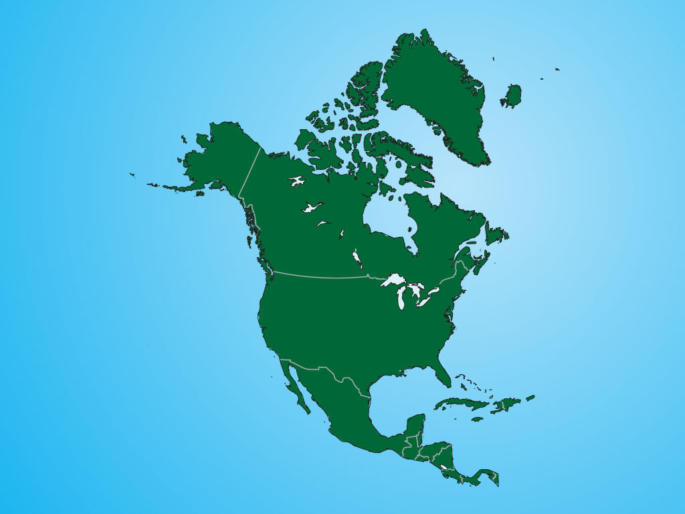
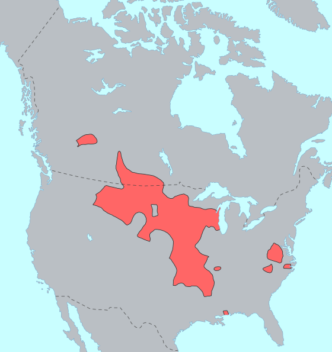
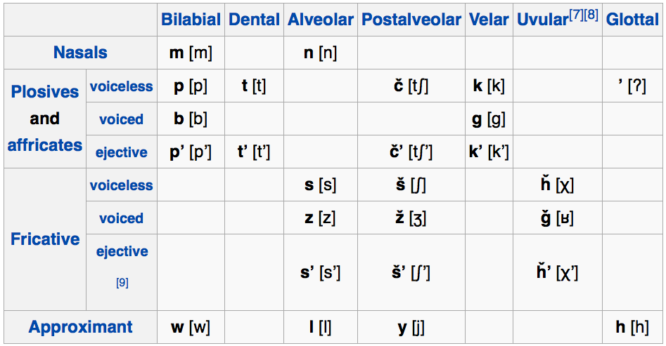
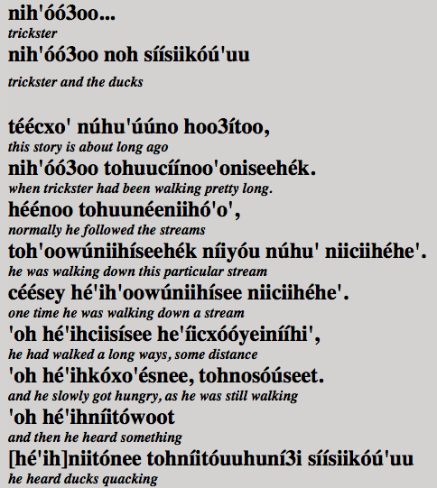
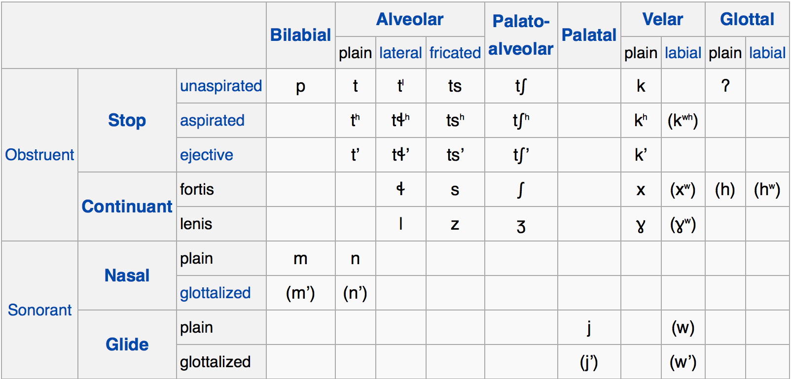

Cree Nation Artists - “N’WE JINAN”
Sam Beer is teaching LING 2000 (Intro to Linguistics) in the Spring
Will is teaching LING 3100 (Language Sound Structures) in the Spring
Skype office hours are now by appointment only!
Linguistic diversity in North America
Three Awesome Native American Language Families
Why Navajo made a great code in WWII/Korea.


Then China
Then Africa
Then Australia
Now for the saddest example
Approximately 296 languages spoken above Mexico before colonialism
These broke down into ~50 families


I’ll talk about a few families today
Dr. Rood will talk about one on Monday
Jesus will talk about Mexican Indigenous Languages on 11/17
You’ll take “Native American Languages” next time it rolls around
(That we’re going to discuss today!)
Siouan Languages
Algonquian Languages
Athabaskan/Na-Dené Languages

Also called “Siouxan” or “Catawban” or “Siouan-Catawban”
Contained 20 languages
Now contains 11 languages
Dakota - 18,000 speakers
Lakota - 6000 speakers
Assiniboine/Nakota - 150 speakers
Crow - 3000 speakers
Osage - 10 speakers
Hidatsa - 10 speakers
Together, they’re the fifth most widely spoken NA language
They’ve got fun history!


Dravidian
Australian Languages
Austronesian
Tai-Kadai
Austronesian
Tai-Kadai

 |

Part of “Algic” which also has Yurok and Wiyot
Around 30 languages
15 have survived
Cree - 117,000 speakers (US and Canada)
Ojibwe - ~25,000 speakers
Blackfoot - ~3,200 speakers
Cheyenne - ~2,000 speakers
Arapaho - ~1,000 speakers
Massachusett (Extinct)
Languages which are highly synthetic, incorporating more than one noun into a single word

Chipmunk
Husky
Moose
Opossum
Skunk
Toboggan
Hickory


Includes Tlingit (spoken in Canada and Alaska) and Athabaskan
32 “Northern Athabaskan” Languages (spoken in Canada and Alaska)
7 “Coastal Athabaskan” Languages (in California and Oregon)
6 “Southern Athabaskan” Languages (in the American West and Southwest)
Has a proposed (and widely liked) link to the Yenisean Languages of Siberia
Navajo - ~170,000 speakers
Apache - ~14,000 speakers
Jicarilla - ~300 speakers

This meant that anything you said into a radio, Hitler heard.
One solution: Use a language the enemies can’t understand!
Speakers of obscure languages who speak their language as “code” during war to communicate
Choctaw, Cherokee, Comanche, Seminole, Navajo, and Basque were all used this way
Code words were used (“Turtle” for “tank”, “Gah” (“rabbit”) for R) to further complicate things!
The movie “Windtalkers” is about these soldiers
Let’s talk about Navajo

Vowel Length
Vowel Nasality
Tone (High vs. Low)
Marks the “reality” or nature of the action
Markers for if a verb’s action is Incomplete
… or Complete
… or Typical
… or in progress
… or in the future
… or possible/desired
Marks the nature of the temporal boundaries and progress of an action
Mark whether the action is happening at a specific moment
… or just generally happening
… or ongoing for a while yet
… or recently completed
… or happening repeatedly
… or temporally different from the last one
… or over a few different targets/locations
… or involves an abrupt change in direction
… or involves a change in form
… or requires motion in a straight line
… or just occurs sporadically, here and there
-ʼą́ – Solid Roundish Objects
-yį́ – Load, Pack, Burden
-ł-jool – Non-Compact Matter
-lá – Slender Flexible Object
-tą́ – Slender Stiff Object
-ł-tsooz – Flat Flexible Object
-tłééʼ – Mushy Matter
-nil – Plural Objects 1
-jaaʼ – Plural Objects 2
-ką́ – Open Container
-ł-tį́ – Animate Object
Often, you don’t need to mention the noun again!
Lots and lots of affixes
It’s very agglutinating
It’s also kind of fusional
So only experienced speakers can pick the many affixes apart!
Many of the consonants are unusual
Words are heavily modified by suprasegmentals
Verb meaning is really complex
Nouns aren’t usually necessary after the first mention
All of this is accomplished in an unparsable affix-pile.
At the Battle of Iwo Jima, Major Howard Connor, 5th Marine Division signal officer, had six Navajo code talkers working around the clock during the first two days of the battle. These six sent and received over 800 messages, all without error. Connor later stated, “Were it not for the Navajos, the Marines would never have taken Iwo Jima.”
From 1879 to 1938, the US Government forcibly sent Native American kids to boarding schools where children were beaten for speaking their native Language.
Our government fought hard to make that happen
… was called upon by Territorial Governor John Evans in 1864 to suppress Indian uprisings. In his capacity as Captain of Company D, Nichols participated in the infamous Sand Creek Massacre on November 29, 1864.
North America had lots of linguistic diversity
We still have some linguistic diversity
Navajo is incredible
You should take “Native American Languages” here